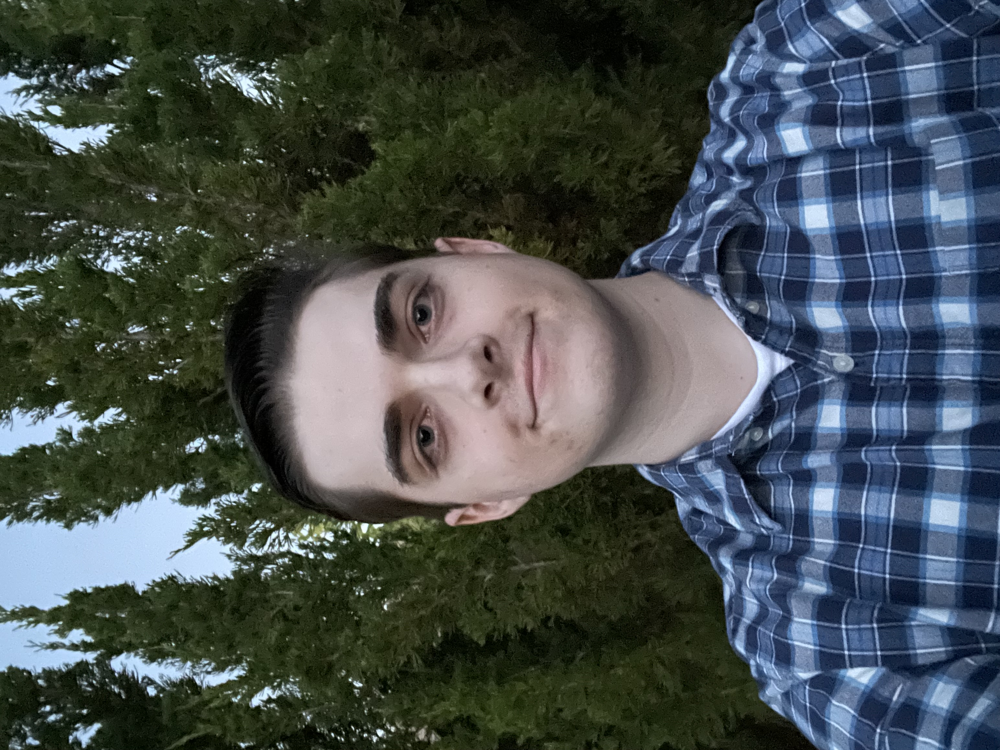

I am currently a student at California State University Sacramento studying Computer Science,
I am two semesters from graduating but I am thinking about staying an extra semester to potentially get a Psychology Minor & Math Minor
My favorite language is C++, however I am fluent in Python, HTML (I coded this website), Java & have some experience working with SQL Databases!
I originally started at community college, where I had Professor Fowler who had us code multiple small games as mini projects for his class.
I learned a lot and fell in love with the satisfaction of getting a long, difficult program to finally compile and be everything I imagined it to be!
I look forward to new opportunities and experiences to better myself not only as a coder but as an individual.
I am a Competitive Gamer at heart, I mainly played League of Legends, and this is a link to my main account, NorCal (https://www.op.gg/summoners/na/NorCal).
I reached the highest rank of Challenger in the beginning of 2023 and my dream is to hit Rank 1.
I also played on the Sacramento State eSports club as the mid laner for two years 2021-2022.
The only other game I play is Rust, however it is something I play much more rarely given how time consuming it is.